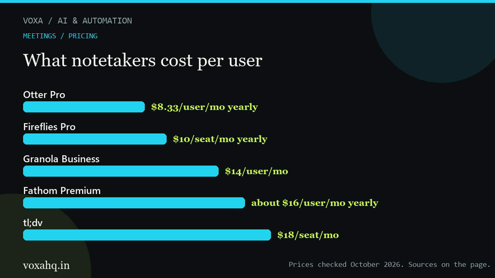

Best AI meeting notes apps in 2026

Updated October 6, 20266 min readPrices checked Oct 2026 0, Granola 4, Fathom 6, tldv 8" width="1200" height="675" loading="lazy" decoding="async">Quick answer
Fathom has the best free plan, Fireflies is best for sales teams, and Granola is the one that never puts a bot in the call.
- Fathom free: unlimited recordings with five AI summaries a month.
- Fireflies free: unlimited transcription, 800 minutes of storage, three summaries; paid from 0/seat/mo yearly.
- Otter free caps at 300 minutes a month; paid from $8.33/user/mo yearly.
- Granola from
4/user/mo and records device audio with no bot.Every one of these tools promises the same three things: a transcript, a summary, and a list of who agreed to do what. So ignore the feature list. What separates them is where the audio gets recorded, how the free plan is capped, and what happens to your notes afterwards.
Best free option is Fathom. Best for a sales team is Fireflies. If you hate the idea of a bot sitting in your calls, look at Granola.
Tool Free plan Paid from Bot in the call? Fathom Unlimited recordings, 5 AI summaries a month About $16 a user a month Both options Fireflies Unlimited transcription, 800 minutes stored, 3 summaries $10 a seat a month, yearly Bot, or desktop capture Otter 300 minutes a month, 30 per recording $8.33 a user a month, yearly Yes Granola Unlimited meetings, 30 days of history $14 a user a month No bot at all tl;dv Unlimited recordings, 3 months of history $18 a seat a month Yes Fellow Small free tier, up to 10 users $7 a user a month Bot-free option First decision: do you want a bot in the room?
You can tell a lot about a meeting tool by whether other people can see it. A bot joining changes the mood. Some clients like it. Some find it strange. A few will ask you to remove it, and they're within their rights.
Granola records your device audio, so nobody sees anything. Fathom has a bot-free option, and Fireflies gives you both. Otter and tl;dv rely on the bot.
If you take client calls, the invisible option is usually worth more than any feature on the list.
Second decision: how the free plan fails
Free tiers break in three different ways, and which one annoys you depends on how you work.
- Minutes each month. Otter gives you 300. Fine if you meet twice a week, useless if you meet daily.
- Storage. Fireflies caps you at 800 minutes in total, so old meetings quietly fall out of your account.
- History window. Granola keeps notes for 30 days on the free plan.
Fathom is the only one that doesn't cap recordings, which is why it's the usual answer for one person who mostly wants a recording and a few summaries.
About accuracy claims
Vendors claim somewhere between 85% and 99% for English. Every one of them overstates it on accents and industry jargon.
Two checks before you roll this out to a team. Record a ten-minute call using your own specialist words and read the transcript yourself. Then count the names and numbers the summary got wrong, because those are the mistakes that cost money.
If most of your calls aren't in English, Fireflies supports 100+ languages. Most of the others support far fewer. That usually settles it.
Pick in one line
- Working alone, want free recordings: Fathom.
- Sales team that lives in a CRM: Fireflies.
- Nothing appearing in the call: Granola.
- You want clips out of your meetings: tl;dv.
Meetings are usually one step in a longer process. If you want the recap to trigger the follow-up email by itself, see the automation comparison.
One note: AI pricing moves fast. We read these numbers off the vendors' own pricing pages in October 2026, so check the current price before you buy.
Where to check the current price
These are the official pages we read while writing this guide. Plain links, no tracking, no middlemen. If a number here ever disagrees with what you see, trust their page and tell us so we can fix it.
Frequently asked questions
Which one has the best free plan?
Fathom. You get unlimited recordings and five AI summaries a month. Otter caps free users at 300 minutes, and Fireflies limits free storage to 800 minutes.
Can any of these record without a bot joining?
Yes. Granola is bot-free by design and uses your device audio. Fathom offers bot-free capture on supported platforms, and Fireflies has a desktop recorder instead of the calendar bot. Otter and tl;dv need the bot.
Is recording a meeting legal?
Depends where everyone is. Some places require consent from all participants, others from one. The safe habit is to announce it and check the rules for your area before recording outside calls.
How accurate are the transcripts really?
Claimed accuracy runs from 85% to 99% for English, and real results drop with accents and crosstalk. Test with your own call before trusting it with a client deliverable.
Can I turn meetings into content?
Yes, with permission. Internal training and your own webinars are fair game. For client calls, get written permission and cut anything commercial.